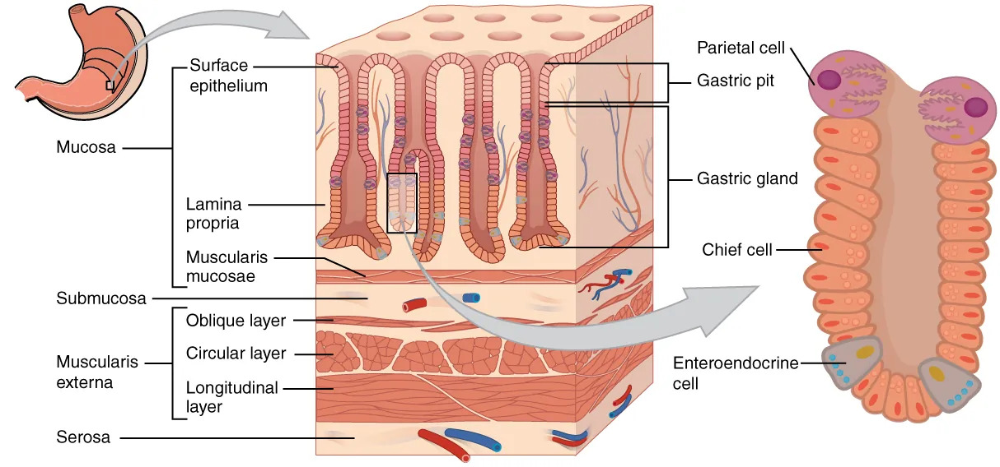
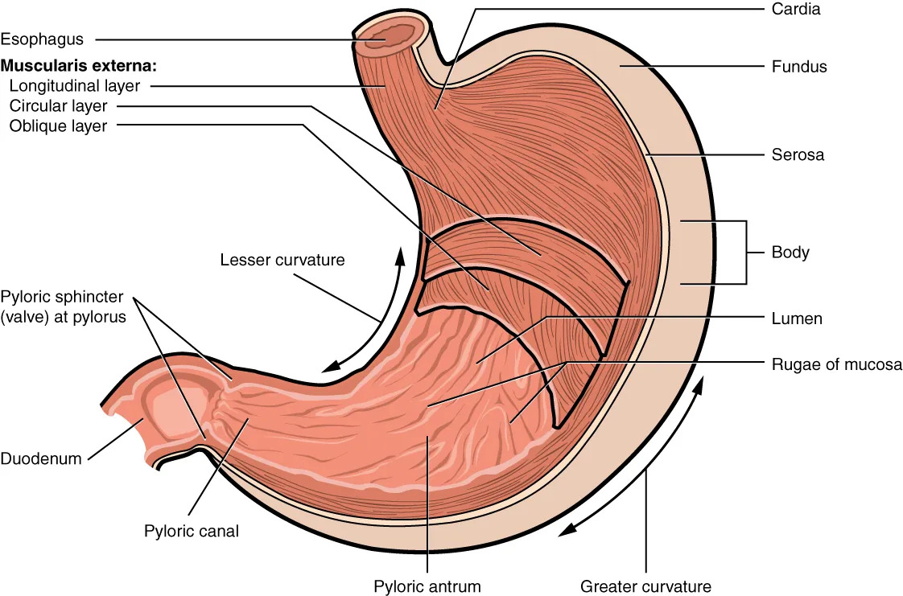
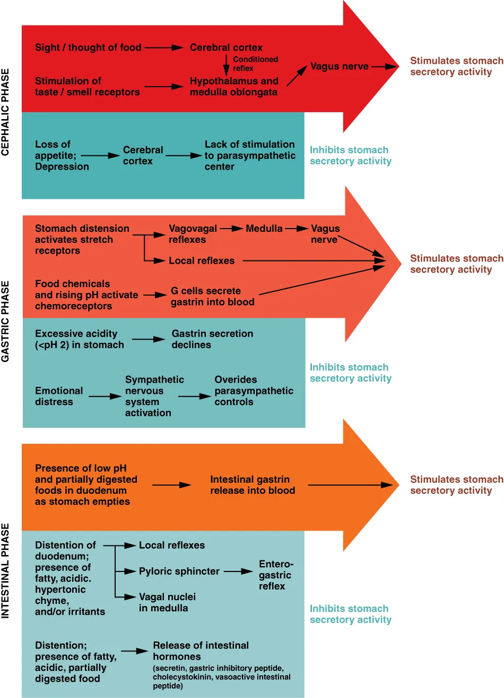
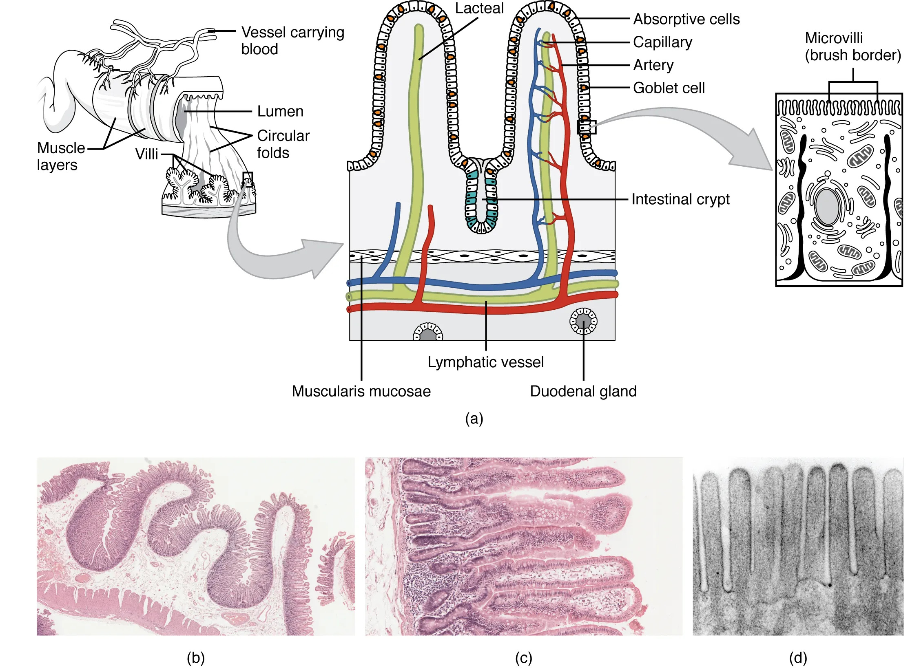
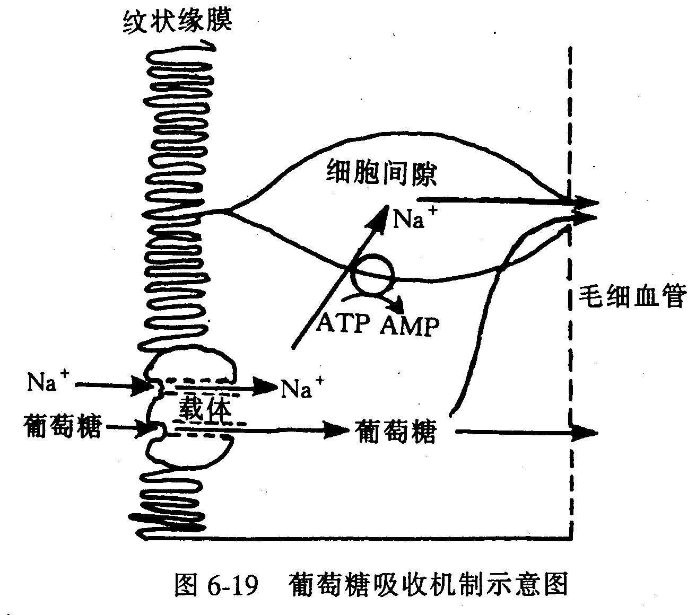
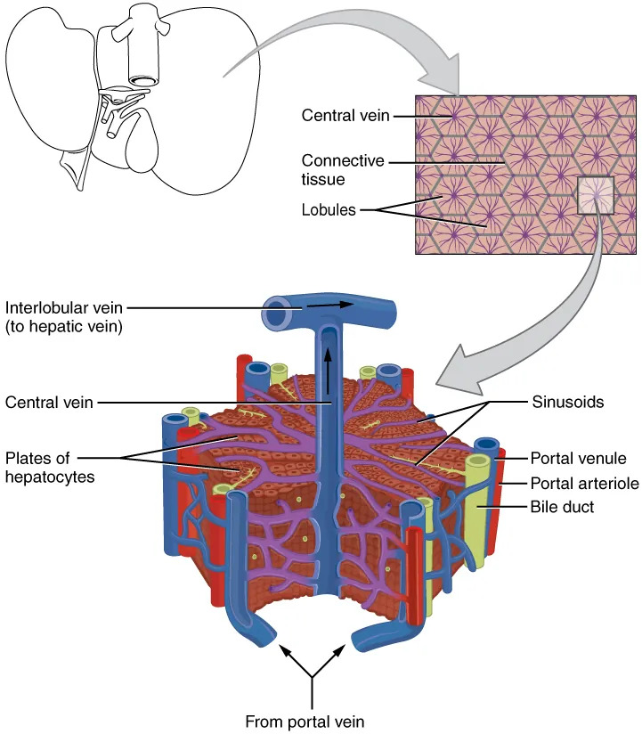

支配消化道的神经既有自主神经，也有内在的独立的神经系统——内在神经丛（肠神经系统）。除口腔、食管上段及肛门括约肌以外，整个消化道都受到交感神经和副交感神经的双重支配，其中以副交感神经的作用为主。这里的副交感神经主要来自迷走神经。
肠神经系统包括感觉、中间和运动三种神经元，约10⁸个。肠神经系统形成一些相对独立的完整反射弧，以完成局部的胃肠反射活动，但这些反射活动往往受到自主神经的影响。
调节消化器官活动的体液因素主要是胃肠激素，这些激素大多由胃肠道黏膜内的内分泌细胞所分泌，其化学本质是肽类。消化道的内分泌细胞有40多种，分布分散，数目巨大。
大多数内分泌细胞的刺激直接来自消化道腔的食物及其消化产物的成分、pH和机械等理化刺激，少数刺激来自神经或局部组织液的变化。胃肠激素的作用途径有内分泌、旁分泌、腔分泌和神经分泌等四种。
主要胃肠激素及其作用：
消化 = 将食物中不能被吸收的大分子物质水解成可被吸收的小分子及其离子物质的过程。
消化的两种分类方式：
人体内的化学性消化：
（1）唾液的消化
唾液含有淀粉酶，能将淀粉和糖原水解成麦芽糖。最佳pH值约6.6。虽然口腔停留时间短，但由于食物以食团形式吞咽，胃液渗入食团需要15～30min，据实验，食物中60%～70%的淀粉是在胃中被唾液淀粉酶水解的，其余的被胰淀粉酶在十二指肠中消化。
唾液分泌的调节：副交感神经起主要作用（分泌量多、酶量多、黏蛋白少）；交感神经作用相反。很多肉食性哺乳动物（如狗和猫）的唾液中不含淀粉酶。
（2）胃中的消化
胃中有唾液淀粉酶对淀粉和糖原的初步消化，胃蛋白酶对蛋白质的初步消化产生多肽，有脂酶对脂类物质的消化。
胃蛋白酶是一种限制性内切酶，只识别并水解酪氨酸或苯丙氨酸的氨基端肽键。需要酸性环境的胃蛋白酶只存在于脊椎动物中，无脊椎动物的蛋白酶都需要碱性环境。
胃黏膜的保护机制（三个原因）：


（3）小肠中的消化
小肠是最重要的消化器官。消化酶来源有三：胰脏、肠腺和小肠绒毛表面的上皮细胞。
胰液消化酶：胰蛋白酶原→（肠激活酶激活）→胰蛋白酶→（激活）→胰糜蛋白酶。胰蛋白酶只识别赖氨酸或精氨酸的羧基端肽键。限制性外切酶（如胰羧基肽酶）从肽链羧基端逐个切下氨基酸。
小肠运动形式：

1. 吸收的部位
小肠是吸收各种营养物质的最主要场所。胃可吸收酒精和少量水；大肠可吸收水、无机盐和某些维生素。
2. 各种营养物质的吸收
（1）糖类的吸收：各种糖类必须彻底消化成单糖才可被吸收。葡萄糖和半乳糖借载体SGLT1（Na⁺依赖共运输）进入上皮细胞，果糖借GLUT5进入；三种单糖均以GLUT2协助扩散出胞入血。葡萄糖和半乳糖进入上皮细胞存在竞争。
（2）蛋白质的吸收：主要以氨基酸、二肽和三肽形式被吸收，以二肽和三肽吸收为主。二肽和三肽通过H⁺-肽同向转运蛋白在H⁺电化学梯度驱动下进入。少量蛋白质通过胞吞转运进入，可能导致过敏反应。新生婴儿吸收蛋白质能力比成年动物强，母乳中的抗体可被完整吸收以获得被动免疫。
（3）脂肪的吸收：长链脂肪酸、甘油一酯和胆固醇必须先与胆盐结合成水溶性的混合微胶粒才能透过水层到达细胞膜。在上皮细胞光面内质网上重新合成甘油三酯，再与载脂蛋白结合成乳糜微粒，以胞吐方式排入乳糜管（淋巴）。中、短链脂肪酸因能溶于水而直接进入毛细血管。
（4）维生素的吸收：脂溶性维生素（A、D、E、K）随脂肪吸收途径进入；水溶性维生素大多数通过Na⁺依赖的主动运输。维生素B₁₂特殊——必须在回肠后段被吸收，需要内因子（胃壁细胞分泌的糖蛋白）结合保护。萎缩性胃炎、胃酸缺乏者内因子减少，可引起恶性贫血。
（5）水的吸收：靠渗透作用。成人每天摄入约2L水，消化道分泌液约7L，仅100mL随粪便丢失——每天胃肠吸收水超过8L。
（6）无机盐的吸收：主要以主动运输方式被吸收。Na⁺每天吸收25～30g。Ca²⁺和铁的吸收是主动运输过程，维生素D促进Ca²⁺吸收，维生素C促进铁吸收（将Fe³⁺还原为Fe²⁺并在肠腔中结合成可溶性复合物）。
吸收途径：跨细胞途径（横跨上皮细胞）和旁细胞途径（通过紧密连接处的蛋白质），后者是十二指肠吸收水和许多离子的主要途径。


肝是体内最大的代谢器官。主要功能概括如下：

物质跨膜运输方式的辨析：